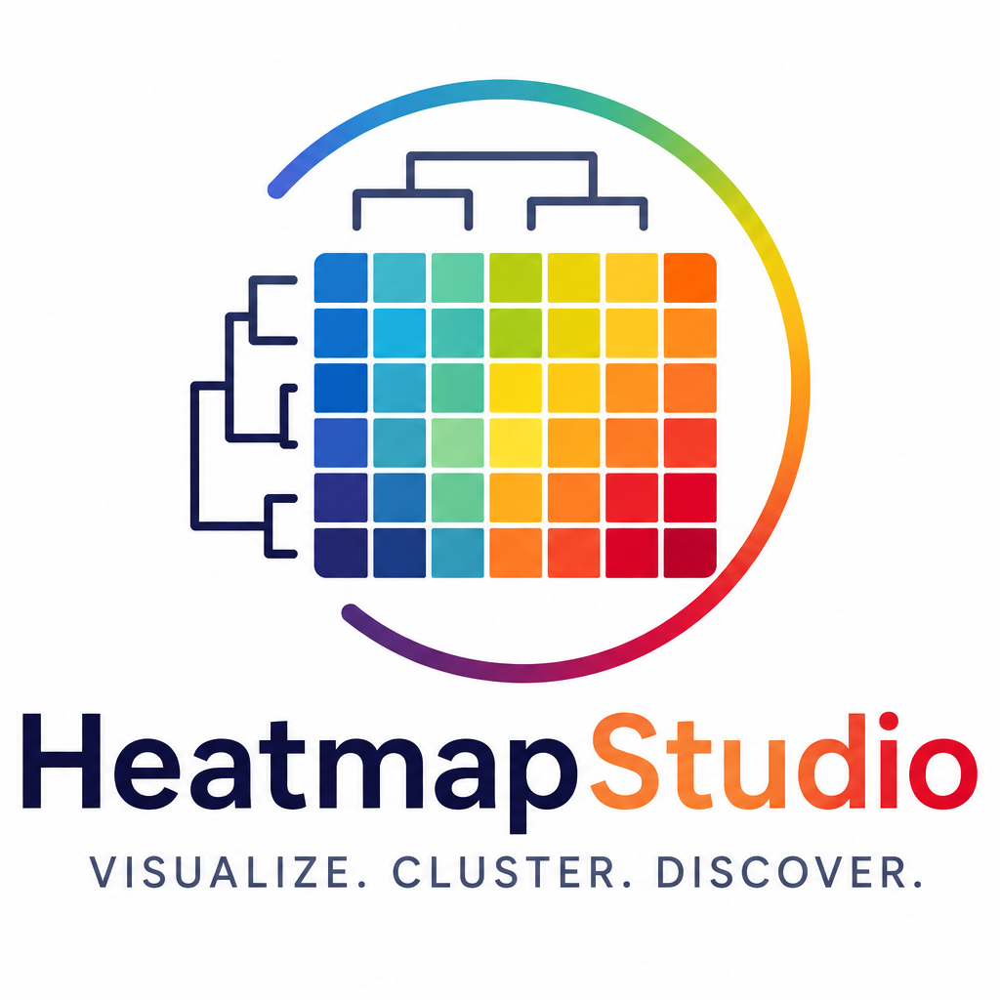

HeatmapStudioUpload, analyze and create publication-quality figures for Proteomics, Metabolomics, Lipidomics and Multi-Omics datasets.
Interactive clustering
Publication-ready export
AI-assisted visualization
HeatmapStudio is an interactive scientific data visualization platform designed to help researchers, students, educators, and life science professionals transform complex omics datasets into clear, informative, and publication-ready heatmaps. The platform supports the visualization and exploration of data from Proteomics, Metabolomics, Lipidomics, Transcriptomics, Genomics, and other Omics disciplines. HeatmapStudio provides an intuitive environment for creating customizable heatmaps with features such as data scaling, hierarchical clustering, multiple distance methods, linkage algorithms, customizable color palettes, annotations, and high-quality figure export.
Our goal is to make advanced scientific visualization more accessible by providing researchers with a simple and user-friendly platform that reduces the technical barriers associated with generating publication-quality figures. HeatmapStudio is designed for a wide range of applications, including research publications, presentations, exploratory data analysis, biomarker studies, omics data interpretation, and scientific communication.
Hi, I'm Prashanth B J, the creator and developer of HeatmapStudio. I am a researcher with interests in proteomics, metabolomics, bioinformatics, computational biology, and omics data analysis. During my research journey, I recognized that generating high-quality scientific visualizations often requires researchers to use multiple software tools, programming languages, or complex workflows. Creating a simple, customizable, and publication-ready heatmap can sometimes involve unnecessary technical challenges.
HeatmapStudio was created with the vision of providing a dedicated and accessible platform where researchers can easily upload their data, explore clustering patterns, customize their visualizations, and generate high-quality figures without requiring extensive programming experience. My vision is to develop HeatmapStudio and OmicsStudio into comprehensive scientific visualization platforms that support researchers, students, educators, and professionals working across different areas of life science and omics research.
The platform will continue to evolve with new visualization tools, customization options, and features designed around the needs of the scientific community. Suggestions and feedback from users are always welcome and will help guide the future development of HeatmapStudio.
Founder & Developer, OMICONS
If you use HeatmapStudio in your research, please cite the following software:
Prashanth B J (2026). HeatmapStudio: An interactive web-based platform for heatmap visualization and analysis. Version 1.0.0. Zenodo.